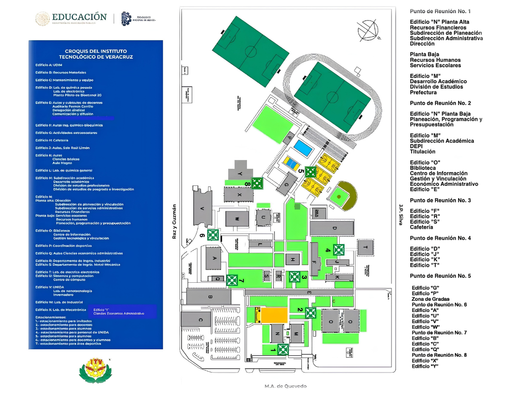

Monitor ITVER
Institucional
Plataforma técnica para el monitoreo de infraestructura de red campus Veracruz.
Recomendación Actual
Mejor Conexión
CARGANDO...
Edificio con mayor estabilidad SNMP.
En Tiempo Real
Speedtest Interno
Analiza tu velocidad de bajada para el reporte de satisfacción UX.
--.-
Mbps

Seleccione Ubicación
Incidencia Manual
Historial Maestro
Plan de Expansión
Tecnológica 2026
1
Backbone 10G
Fibra monomodo certificada.
2
Wi-Fi 6 AX
Alta densidad concurrente.
3
SNMPv3/AI
Gestión predictiva campus.